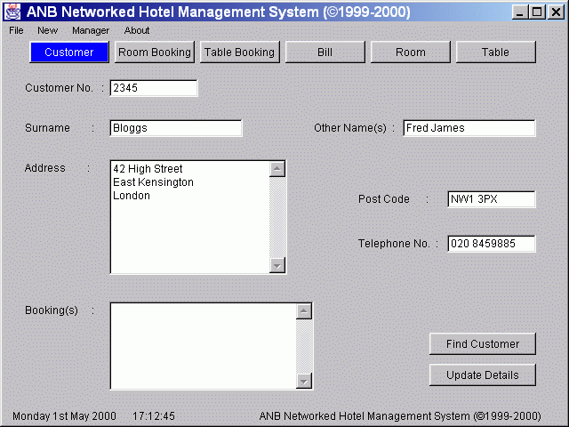

System.out.println(" Waiting For Connection.......");
ServerSocket listener = new ServerSocket(INPORT);
Socket s = listener.accept();
System.out.println(" Connected To Client");
Socket t = new Socket(server, OUTPORT);
ObIn = new ObjectInputStream(s.getInputStream());
ObOut = new ObjectOutputStream(s.getOutputStream());(Server application)
ObOut = new ObjectOutputStream(t.getOutputStream());
ObIn = new ObjectInputStream(t.getInputStream());(Client application)
ObOut.writeObject(r);
c = (Customer) ObIn.readObject();
t.close();
FileOutputStream ostream = new FileOutputStream(CUSTOMERDATAFILE);
ObjectOutputStream fout = new ObjectOutputStream(ostream);
for (Enumeration e = ht_customer.keys(); e.hasMoreElements();)
{Object name = (Object) e.nextElement();}
fout.writeObject((Customer) ht_customer.get(name.toString()));
fout.close();
public class Customer implements Serializable {}
